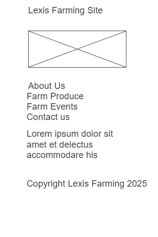

Site Plan
- Site Name: Lexis Farming - This name represents a farm that is focused on showcasing its products and the owners methods of doing farm activities.
- Site Purpose:The site provides a hub for the community by providing information about its products and services and the owners way of farming life, as well as a platform for the community to engage with the farm.
- Scenarios: - What is the most grown plants in Lexis Farm What kind of animals are kept in the farm and their breeds
- Color Schema: Headings: adfadf, Background colors: #f7f7f0
- Typography:headings-Raleway, body-Roboto
Wireframe

This wireframe represents the layout of the Lexis Farming website, showcasing the main sections such as the header, navigation, main content area, and footer. It includes placeholders for images, text, and links to demonstrate the intended structure and flow of the site.